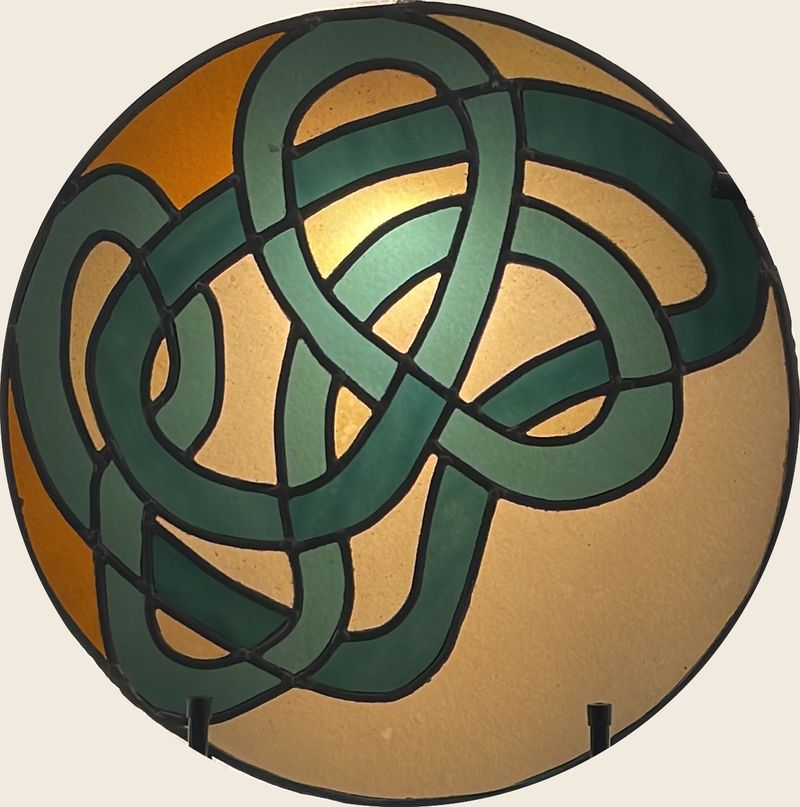
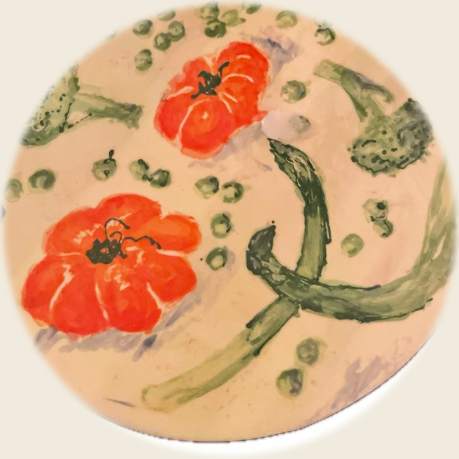

Notre Univers
Derrière chaque tisane, une histoire de famille, un savoir-faire de pharmacien et un amour profond pour les plantes de notre Drôme provençale.

Une histoire familiale
Autour de José, le beau-père pharmacien à la retraite et passionné de plantes, toute la famille s'est réunie pour perpétuer son savoir-faire. C'est à Grignan, dans la Drôme, que la magie opère.
En complément de la tisane préférée "L'Originale", la nouvelle génération imagine des recettes spéciales en s'inspirant des trésors botaniques de la Drôme provençale et du savoir-faire transmis par Jo au fil des années.

L'alchimie des plantes
Ici pas de "pisse-mémé" mais des mélanges parfumés avec des bienfaits prouvés pour agir sur la qualité de notre digestion, de notre énergie, de notre respiration...
Chaque recette est le fruit d'un travail minutieux : sélection rigoureuse des plantes, tests d'assemblage, ajustements des proportions jusqu'à trouver l'équilibre parfait entre goût et efficacité. Un processus artisanal qui prend du temps mais qui fait toute la différence.
Nos convictions
Bio
Nous sourçons des plantes issues à 100% de l'agriculture biologique. La culture conventionnelle des plantes est exposée à une forte pollution liée aux pesticides que nous souhaitons éviter.
Local
Autant que possible, nous jouons local en Drôme provençale. Certaines de nos plantes, comme la badiane par exemple, ne sont pas cultivées en France et leurs origines sont toujours précisées dans la composition des tisanes.
Vrac
Nous privilégions le vrac, la meilleure manière de préserver toute la richesse gustative et les propriétés des plantes.